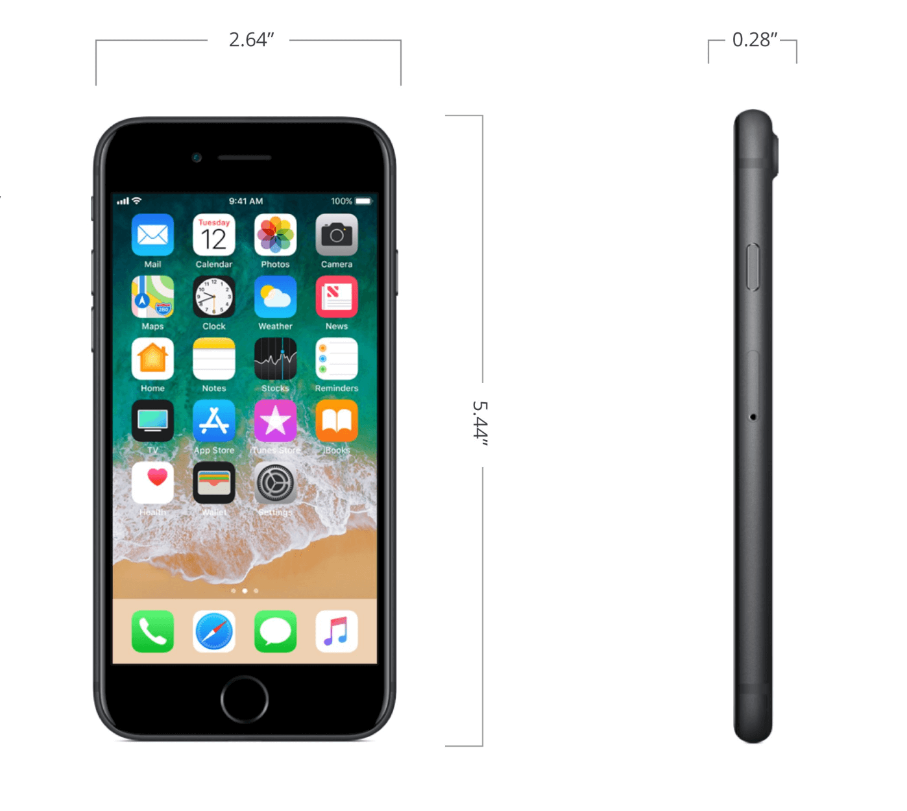
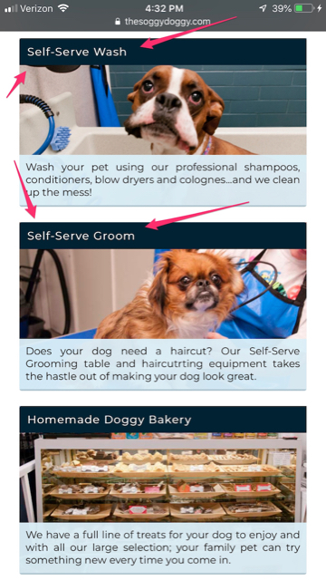
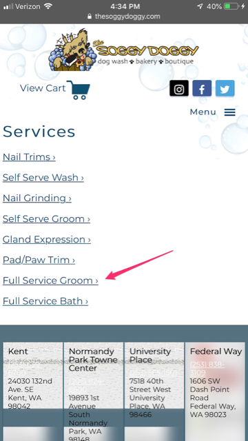
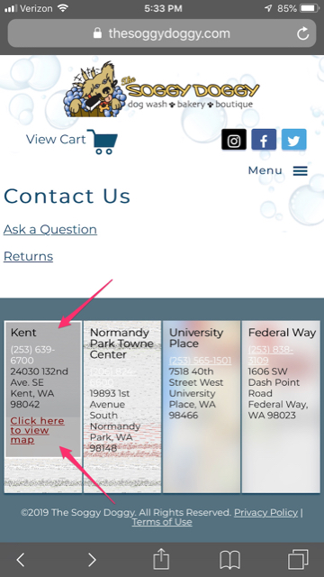
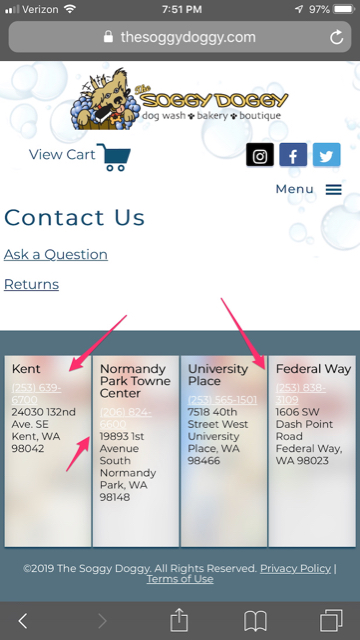

Mobile Usability Test
Welcome back to my blog!
I hope you enjoyed my findings from last week, I collected much data with the help from an awesome group of testers! This week I am continuing the fun with a new group, focusing our user testing studies on mobile devices. We will be following the same procedure as last week just on a smaller screen. Throughout this testing, they will be provided the same mobile device, an iphone 7 plus.
The Testers
Susan
- What line of work do you do?
- How often are you on the computer or surfing the web?
- Would you rather go shopping online or in a store?
I am the Loss Prevention Area Manager for the Western Region.
Everyday, mainly for work.
I like to shop both online and in store.
Jon
- What line of work do you do?
- How often are you on the computer or surfing the web?
- Would you rather go shopping online or in a store?
I work at the Fort Lewis Main Exchange as your LPM( Loss Prevention Manager).
All the time.
My wife does all the shopping, but I like going out to the stores.
Frank
- What line of work do you do?
- How often are you on the computer or surfing the web?
- Would you rather go shopping online or in a store?
I work Loss prevention. My title is an ESSA (Exchange Security and Safety Associate).
All the time.
I never go shopping, but if I had to choose it would be in the store.
Website on the Smartphone
Tasks
- Can you locate the Grooming price list?
- Can you locate the Store hours?
- Can you find the stores contact numbers?
Testers Results
- Susan
- Jon
- Frank
She looks over the homepage and clicked on Self-Serve Groom, but noticed shortly after this was not what she wanted. First off, this does not provide the prices for grooming services, only self-serve, she blurts out, "I don't want to bathe my dog!". I could tell with her long stare at the phone she was confused, next she locates the 'services' link in the nav bar. This is where she found a list with the correct link, Full Service Groom which leads her to the grooming prices. The following two questions she found easily by clicking the location tab in the drop-down menu.
Picture below shows Self-Serve options
Jon used a similar approach as Susan, he saw the word 'Groom' on the homepage and assumed he would find
the grooming prices. Not there! Next
he proceeds to use the drop-down menu where he find's Full Service Groom, finding his
answer. He than continuies to the next questions
using the 'Contact' link searching for the phone numbers and hours. He finds the numbers easily, because
they are
located at the footer of the page like it is with every page, he gets annoyed
by not seeing the hours.
He than goes to the menu tab clicking the 'location' link finding the hours of operation. He told me "that
should not have been difficult".
I agreed and said, "that's why we're doing this"!
Picture below shows list of Services
Lastly, we have Frank who has a different outcome. He clicks the menu tab right away and locates 'Services' from there finds Full Service Groom with the prices. Very Smart! Than he quickly goes to find the contact numbers by scrolling all the way down the page. Onto the last question finding the store hours, in which he struggles. He first goes to the online store, in the menu options which was interesting, than goes to contact. While on the contact page he notices it has no information pertaining to hours, just two links. He clicks on the phone number located at the footer of the page which highlights the section and diplays "Click here to view the map". He clicks again and finally it takes him to the store hours he was having so much trouble finding.
Picture below shows highlighted section
Summary of Final Thoughts
My testers did an excellent job inspecting the Soggy Doggy Website using a different method than before,
using a mobile device. I was able to gather new data and found ways the mobile version site can be improved
and be better accessible to visiting users.
I do have a few recommendation's that I believe would make the site easier to use and will not give
users a
chance to become confused. Starting with the grooming prices, both Susan and Jon had a hard time finding the
grooming prices, they assumed it would be on the ‘Self-serve Groom’ page. This would be easily avoided if
they would combine all services with the prices on one single page. This would avoid the users going on a
searching party!
The search for the contact information and the store hours were a bit messy as well. The phone numbers
are
located at the footer of each page but are barely seen by the wrong usage of font-color. Phone numbers that
are small and the color white with a light background will make it hard to read. Another suggestion would be
including the store hours in the footer, this would not take up much space. This would avoid users clicking
multiple tabs trying to find an important key question that every user will be wanting to know.
Picture below shows barley visiable numbers
